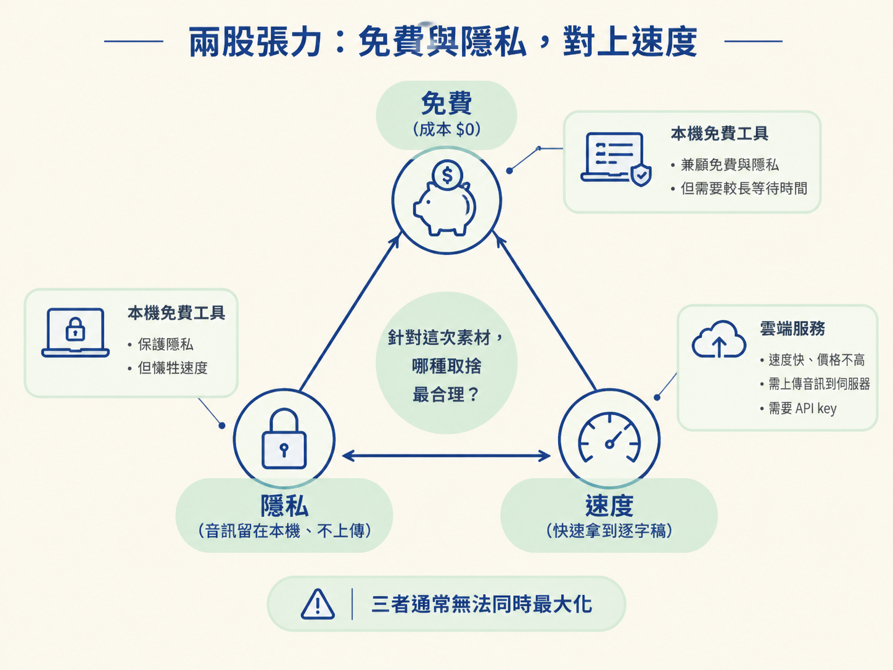
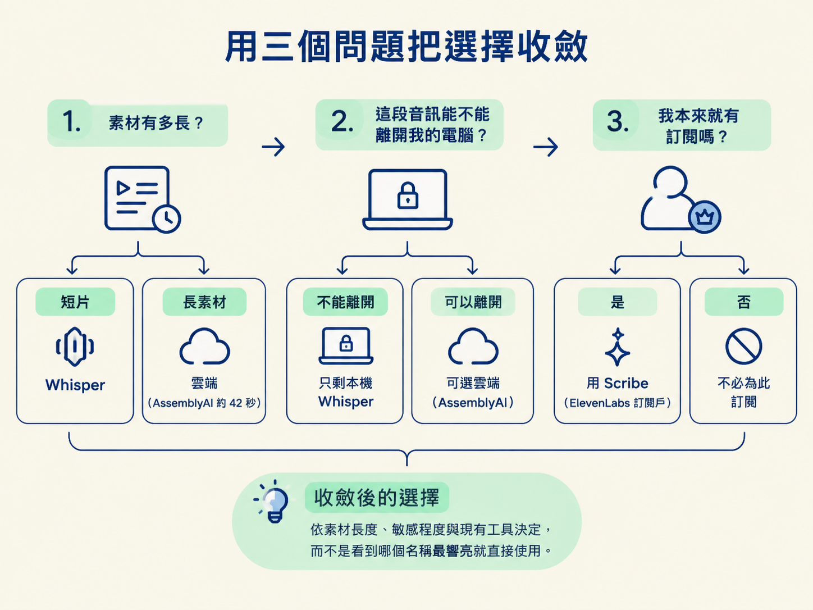
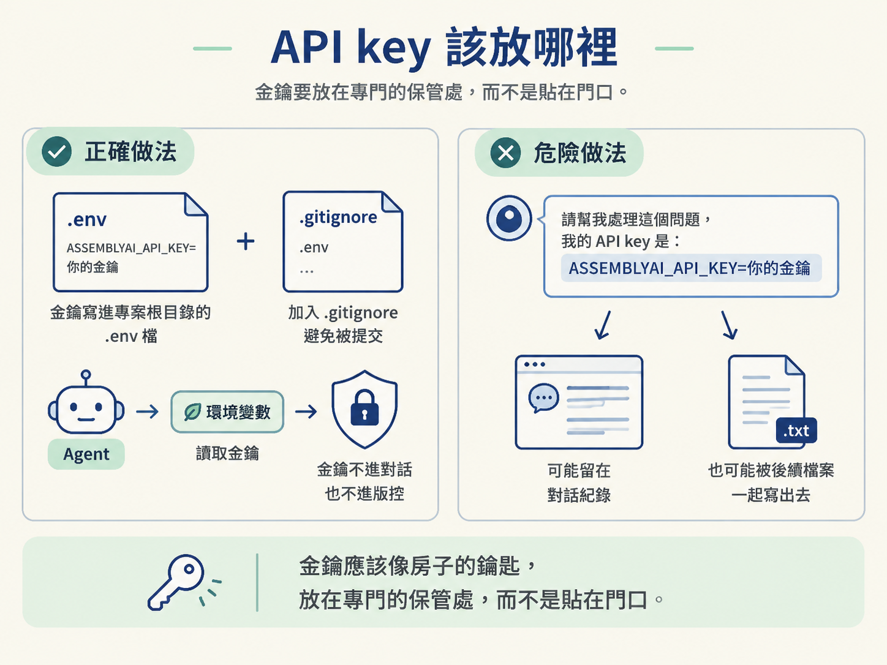

前面把 agent 想成導演、把 HyperFrames 想成爐子；但導演要開始剪片以前，得先聽懂素材。轉錄就是這條 pipeline 的第一道入口：把影片裡的語音變成帶時間碼的逐字稿，交給 agent 判斷哪裡是靜音、哪一句是 NG 重錄，以及動態圖像應該出現在哪個時間點。
這裡要做的決定有兩層。第一層是選擇轉錄工具：用免費、保留音訊在本機的 Whisper，還是用速度更快的雲端服務 AssemblyAI 或 ElevenLabs Scribe。第二層是把雲端服務需要的 API key 放到正確位置，讓工具讀得到，卻不要讓金鑰出現在對話紀錄或版本控制裡。
這三個選項沒有永遠的第一名。它們像三種交通工具：有的省錢、有的快、有的適合你手上已經有的票。這一節會用幾個可直接回答的問題，幫你替每段素材做出選擇。
能依速度、成本與隱私，在 AssemblyAI、Whisper、ElevenLabs Scribe 之間選擇轉錄工具，並把 API key 放進正確的位置，不讓它出現在對話裡。
轉錄工具的核心拉扯是：你想省錢、想讓音訊留在自己的電腦上，還是想快點拿到結果？這三件事通常不能同時最大化。
免費的本機工具能保護隱私，代價是等待時間較長；雲端服務速度快、價格也不高，但音訊必須上傳到對方的伺服器，而且需要一把 API key。所以真正的問題不是「哪一家最好」，而是「針對這次的素材，哪種取捨最合理」。

| 工具 | 成本 | 速度 | 要留意的事 |
|---|---|---|---|
| Whisper | $0，跑在自己的電腦上 | 一小時音訊約 15–50 分鐘（看 CPU） | 免費、免帳號，但明顯慢 |
| AssemblyAI | 約 $0.21／小時音訊 | 一小時音訊約 42 秒 | 速度快，會回傳每個字的精確時間；需要 API key |
| ElevenLabs Scribe | 若已有 ElevenLabs 訂閱可直接用 | 約比 AssemblyAI 慢 40% | 適合本來就訂閱的人，缺點就是較慢 |
速度差距最明顯。同樣是一小時音訊，Whisper 在本機可能要跑 15 到 50 分鐘；AssemblyAI 約 42 秒就能完成，成本約 0.21 美元。對需要反覆修改、反覆轉錄的教學內容來說，這幾分鐘甚至幾十秒，會直接影響你的迭代節奏。
因此，多數教學會預設使用 AssemblyAI：它在速度與成本之間取得了不錯的平衡。Whisper 的價值是免費，而且音訊可以留在本機；ElevenLabs Scribe 則適合本來就有 ElevenLabs 訂閱的人，不必為了轉錄再開一個帳號。
面對一段新素材，不必先比較一大串功能。依序問自己三個問題：
三個問題問完，選擇通常就會收斂。重點是按照素材的長度、敏感程度與現有工具來選，而不是看到哪個名稱最響亮就直接使用。

第一個反例是「免費的最貴」。假設你正在反覆修改同一支影片，每次只改一句話，卻都要重新轉錄一次；如果 Whisper 每次需要跑十幾分鐘，累積下來，你花掉的時間價值可能遠超過 0.21 美元。這種高迭代情境下，付費換速度反而更省。
但如果你只是偶爾剪一支短片，本機免費路線就可能完全夠用。這時為了省下幾分鐘而付費，反而沒有必要。
第二個反例是隱私。有些訪談或內部訓練內容不適合上傳到第三方。這種情況下，雲端服務就算再快也不能選；這已經不是價格問題，而是能不能使用的問題。
AssemblyAI 這類雲端服務需要一把 API key。處理金鑰的原則很簡單：把它放進專案的環境變數檔，讓工具去讀；不要讓它出現在對話或版本控制裡。
慣例上，可以在專案根目錄建立一個 .env 檔案，裡面寫一行變數：
# .env
ASSEMBLYAI_API_KEY=你的金鑰這樣做有兩個好處。第一，agent 執行程式時可以從環境變數取得 key，你不必每次把金鑰貼進 prompt。第二，只要把 .env 加進 .gitignore，金鑰就不會不小心被 commit 進 repo。
反過來說，最危險的做法就是把 key 直接貼在對話框裡。它可能留在對話紀錄，也可能被後續產生的檔案一起寫出去。金鑰應該像房子的鑰匙，放在專門的保管處，而不是貼在門口。

另外，starter prompt 通常會請 agent「讀完兩個工具的官方說明後，告訴我還有什麼要設定」。你可以把這個回報當成檢查點：如果 agent 回報缺少 AssemblyAI 的 key，就表示它已經正確接上轉錄工具，只是在等你把金鑰補進 .env。
先問三件事：素材有多長、能不能上傳、手上有沒有現成訂閱。Whisper 免費、在本機執行，但一小時音訊要 15–50 分鐘；AssemblyAI 約 $0.21／小時、約 42 秒完成，但需要 API key；ElevenLabs Scribe 適合已有訂閱的人，速度約比 AssemblyAI 慢 40%。最後，金鑰一律放進
.env，並排除在版控之外，永遠不要貼進對話。
工具選好了、key 也放到了正確位置，工作區就具備開始轉錄的條件。接下來還有一件事：先跟 agent 講好規矩，避免它把尚未驗證的事情說成已完成，或在沒有詢問你的情況下花錢。最後一節會把這三條護欄裝上去。